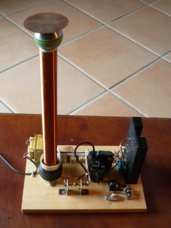
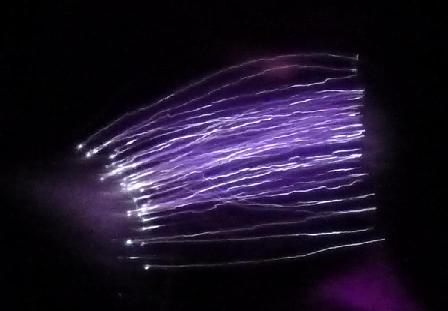
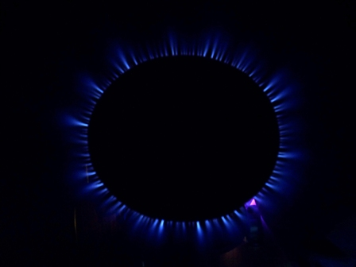

Povero Nikola Tesla, ti hanno demolito la tua Wardencliffe Tower e non sapevano che ti saresti preso una bella la rivincita...
Quanti fedeli seguaci ed ammiratori (è proprio il caso di dire) ha nell'era di Internet il nostro vecchio scienziato serbo? Come pochi altri scienziati, credo.
Ad ogni modo anch'io ho fatto il mio teslino, non volendo accingermi alla costruzione di quei mostri che si vedono su YT e sui numerosi forum dedicati.
Aspettando anche il tesla dell'amico Massimo (Max, quando arriva fammelo sapere...) ho giocato un po' con qualche residuo trovato nei cassetti dei vecchi componenti, così, tanto per procurare un po' di compagnia alla Wimshurst e alla Van der Graaf che abbiamo già visto su questo blog.

Le notizie che si possono trovare in rete cliccando "tesla" sono ricche e pressochè infinite e quindi non approfondisco; come breve prologo alla realizzazione dirò solo questo:
- un "Tesla" è un generatore di altissime tensioni ad alta frequenza, ed è quindi diverso dalle macchine elettrostatiche in corrente continua; piace perchè è capace di coreografiche scariche elettriche e di un bellissimo "effetto corona" (ved.).
- è costituito da solo quattro componenti fondamentali: un generatore di alta tensione (alcune migliaia di volt), uno spinterometro (due conduttori fra i quali scocca una scintilla), un condensatore e due bobine concentriche.
Il cuore dell'apparecchio è la lunga bobina di spire affiancate di filo sottile, avvolte su un tubo di qualche centimetro di diametro; nel mio caso (essendo un teslino!) è un tubo da 32 mm, lungo 40 cm.
Questa bobina (detta secondario) ha una propria frequenza di risonanza, nel range dalle decine alle centinaia di KHz.
L'altra bobina (detta primario) ha pochissime spire di filo grosso ed è avvolta alla base di quella principale, in serie con un condensatore.
L'insieme condensatore-primario costituisce un circuito LC (induttanza-capacità), anch'esso con una propria frequenza di risonanza; quest'ultima deve essere il più vicino possibile a quella del secondario.
Ved. su Wiki lo schema di principio di un Tesla, che in pratica rispecchia lo schema reale.
Come generatore di alta tensione ho usato un trasformatore di riga di un vecchio televisore a tubo catodico pilotato da un paio di transistors 2N3055 in un circuito autooscillante; la tensione prodotta a vuoto è di circa 25mila volt (a bassa corrente!) che diminuisce però notevolmente sotto carico.
Il componente più critico è il condensatore ad alta tensione, che deve avere l'esatta capacità per risuonare isofrequenza con la bobina secondario.
Nel mio caso ho usato otto condensatori da 15 nF 1 KV in serie, per una capacità totale di 1870 pF su 8000 volt; la frequenza di risonanza di tutto l'insieme, misurata leggendo il massimo disturbo con un ricevitore, è risultata di 126 KHz.

La tensione generata dal mio teslino è relativamente bassa (diciamo 150mila volt...) capace di generare dei fulminetti ridicoli di circa 5-6 cm di lunghezza; le esperienze che si possono fare sono tuttavia assai interessanti.
Il bello è anche che questa altissima tensione (per piccoli apparecchi come il mio) è del tutto innocua: prima di tutto perchè è a bassissima corrente e poi perchè essendo a radiofrequenza non viene percepita; quindi anche "prendendo la scossa" avvicinando la mano alla sommità della bobina si sentono solo dei "colpetti" poco fastidiosi allo scoccare delle scariche (anche se per avvicinare la mano la prima volta serve un bel po' di coraggio...).
Naturalmente tutt'altro discorso è per i grossi tesla alimentati con trasformatori di rete, dove la carica accumulata nel condensatore è di parecchi Joule e questi possono essere assai pericolosi.
Molto suggestivo è osservare al buio il forte effetto corona che si sprigiona da un dischetto metallico dai bordi affilati: sembra proprio di vedere gli elettroni accelerati e impazziti che si ammassano sui bordi, si respingono l'un l'altro e sfuggono sotto forma di una aureola violacea ionizzando l'aria, mentre in giro un bel po' di molecole di ossigeno diventano triatomiche, spandendo un delizioso profumo di ozono...
Ricordo che un bellissimo Tesla storico si trova presso il Museo della Scienza e della Tecnica di Milano, capace di generare un fulmine di un paio di metri di lunghezza.
Se si è fortunatissimi (ma proprio 'issimi, 'issimi) lo si potrà anche vedere in funzione per qualche secondo, e allora si capirà perchè durante i temporali si sentono i tuoni...
La foto seguente, presa con una lunga posa di 20 secondi, mostra le scariche tra l'elettrodo superiore del teslino ed una sfera "collegata" verso terra.

La terza foto non è il bruciatore del fornello per cuocere la pasta ma l'effetto corona sui bordi del dischetto di cui parlavo poco sopra.
Il colore dell'effluvio appare azzurro in foto, mentre in realtà è lilla-violaceo.

L'odorino dell'ozono purtroppo non lo posso mettere, cerchiamo di avere pazienza ancora per qualche decennio...